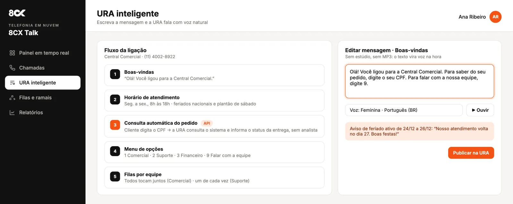
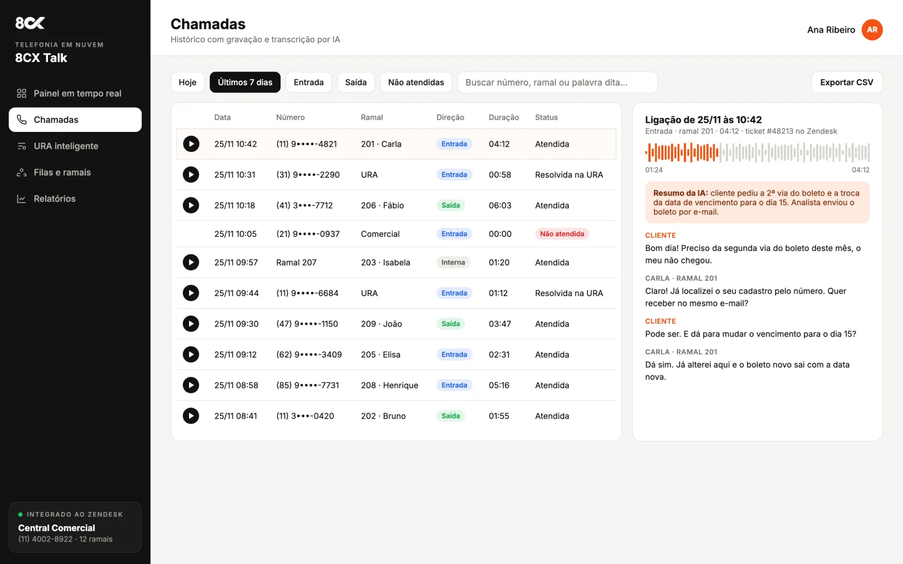
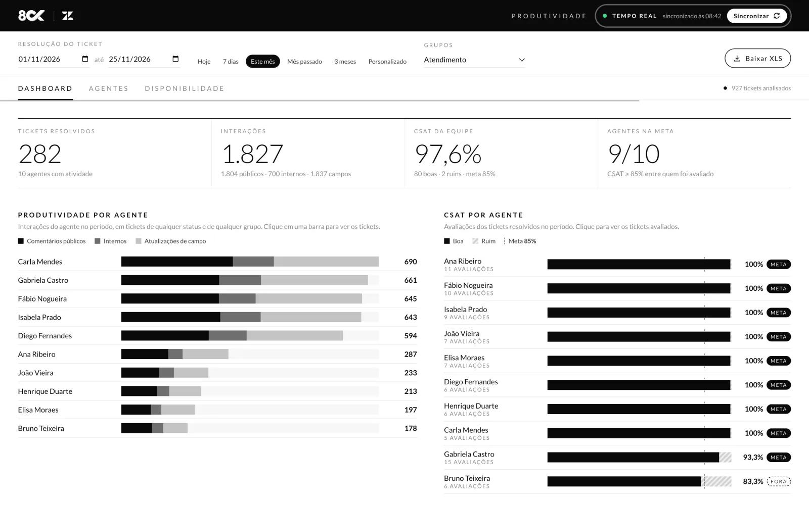
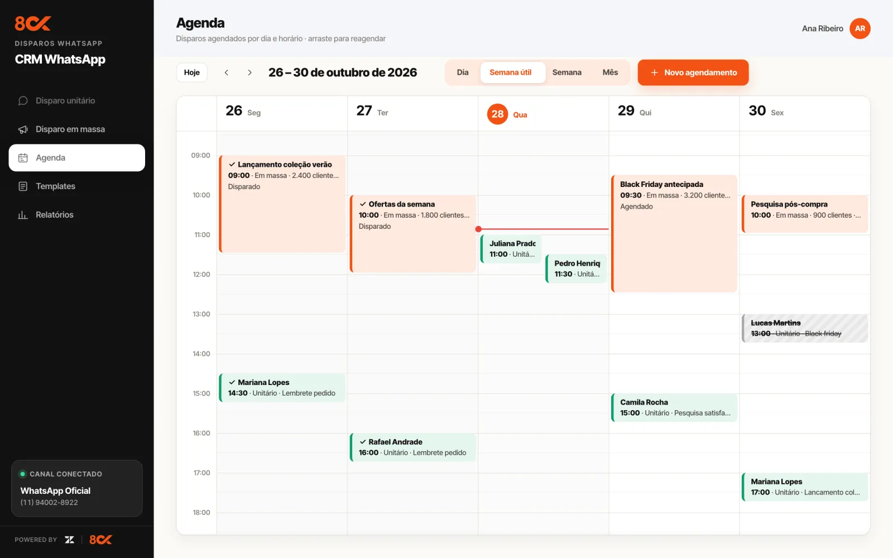

8CX Talk
URA inteligente que consulta os seus sistemas, ligações transcritas por IA e painel em tempo real. O time atende pelo computador, pelo celular ou pelo telefone IP, com o número que você já tem.

A URA responde sozinha, até fora do expediente
Toda ligação gravada também vira texto
Para trazer o número atual da empresa
Formas de atender: telefone IP, computador e celular
A telefonia em nuvem da 8CX, integrada ao Zendesk.
A URA que responde sozinha.
A URA comum só direciona a ligação. A do 8CX Talk consulta os seus sistemas durante a chamada e já dá a resposta ao cliente, como o status de um pedido.
- Consulta por API durante a ligação
- Mensagens escritas em texto que vira voz
- Aviso de feriado ou horário no ar no mesmo dia
- Regras de expediente, feriados e plantões

Leia a ligação em vez de ouvir.
Cada ligação gravada também vira texto, ao lado da gravação. O coordenador confere um atendimento em segundos e acha o que foi dito numa busca.
- Gravação para ouvir e baixar, com acesso por perfil
- Transcrição e resumo gerados por IA
- Busca por número, ramal ou data
- Exportação em CSV e PDF

Veja a operação acontecendo.
Quem está livre, em ligação ou chamando, a fila de cada equipe e o volume por hora. O gestor ajusta a escala com dados, não com palpite.
- Status de cada ramal ao vivo
- Filas por equipe: tocam juntos ou em sequência
- Ligações não atendidas em destaque
- Relatórios por período, ramal e número de entrada
Ramais em qualquer lugar
Telefone IP no escritório, app no computador ou no celular.
Filas de atendimento
Distribuem as ligações por equipe.
Transferências
Passam a ligação entre setores sem perder o histórico.
Perfis de acesso
Cada usuário vê o que a função permite.
Número identificado
Nome da empresa na tela do cliente, sob consulta.
Sem equipamento
Nada de central no rack: a 8CX cuida da estrutura na nuvem.
A 8CX instala, configura e acompanha.
Conversa
Entendemos a sua operação e mostramos o 8CX Talk funcionando com dados de exemplo.
Implantação
Instalamos o app no seu Zendesk e configuramos as regras com o seu time.
Hypercare
Duas semanas de acompanhamento depois do go-live para ajustar o que for preciso.
Vamos conversar sobre o 8CX Talk?
Clique e fale com a 8CX no WhatsApp. A mensagem já vai escrita:
“Olá! Vim do site da 8CX e queria saber mais sobre o 8CX Talk.”conversa ↗

NPS 8CX ↗
Pesquisa de NPS automática por e-mail ou WhatsApp, com a nota de volta no ticket.

8CX Produtividade ↗
Produtividade, CSAT, SLA e disponibilidade de cada agente em tempo real.

8CX Quick ↗
Busca avançada, ações em massa, alertas e lembretes para o agente render mais.

8CX CRM ↗
Disparos de WhatsApp e e-mail pelo Zendesk, com agendamento e criação de templates.